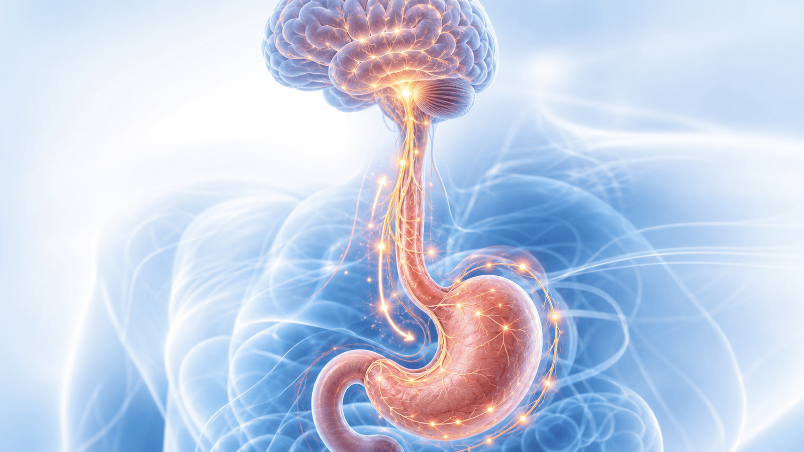
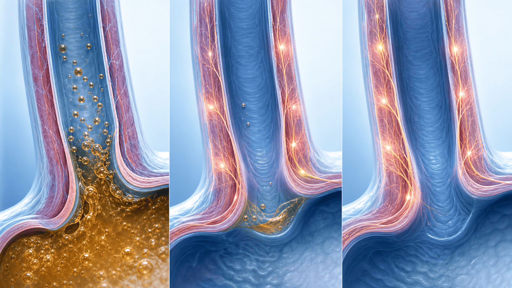
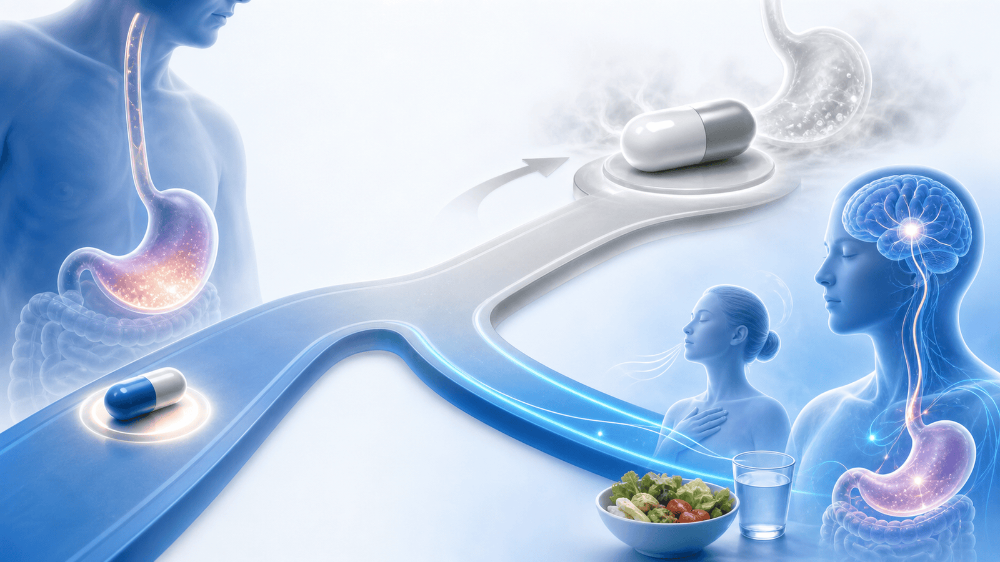

뇌–장 상호작용 장애 — 눈에 보이는 상처가 아니라, 신경이 예민해진 상태입니다

이 오해들 때문에 치료가 엉뚱한 방향으로 흐르기 쉽습니다
다른 병이 숨어 있지 않은지 확인한 뒤, 안심하고 과민성 치료로 넘어갑니다
| 검사 | 왜 하나요 |
|---|---|
| 식도 조직검사 | 내시경이 정상으로 보여도 호산구식도염(알레르기성 식도염)을 놓치지 않으려고 조직을 떼어 봅니다. |
| 헬리코박터 검사·제균 | 균이 있으면 없애는 것만으로 소화불량이 좋아지는 분이 있어 먼저 확인합니다. |
| 식도 산도·임피던스 검사 · 필요할 때 | 산성·비산성 역류와 증상이 함께 나타나는지 살펴, 증상이 산 때문인지 예민함 때문인지 가립니다. |
| 식도 운동(내압) 검사 · 필요할 때 | 식도 운동·삼킴 장애 같은 다른 원인을 함께 가려냅니다. |
| 위 배출 검사 | 식후 더부룩함·구토가 두드러질 때 위가 비워지는 속도를 확인합니다. |
유형에 따라 치료가 달라집니다 — 그래서 구분이 중요합니다

안 들으면 ‘더 센 산약’이 아니라, ‘다른 종류의 치료’로 방향을 바꿉니다

우울증 치료가 목적이 아닙니다 — 우울증 용량보다 훨씬 낮은 용량으로 시작합니다
적은 양으로 시작해 천천히 올립니다 — 지금 드시는 약을 모두 알려 주세요
| 약 | 흔한 부작용 · 주의 | 먹는 법 |
|---|---|---|
| 아미트립틸린 (삼환계) | 입 마름·변비·졸림·체중 증가·일어설 때 어지러움, 드물게 소변보기 어려움·녹내장 악화, 많은 양에서 심전도 변화. 어르신·심장병이 있으면 낙상 주의 | 잠들기 전 적은 양으로 시작, 천천히 올림 |
| 미르타자핀 | 졸림·식욕 증가·체중 증가(체중이 빠지는 분에겐 오히려 도움), 드물게 백혈구 감소 | 잠들기 전, 혈액 이상이 있으면 점검 |
| 부스피론 | 어지럼·두통·메스꺼움. 자몽·일부 무좀약(케토코나졸)과 상호작용, 일부 우울증약(MAO 억제제)과는 함께 쓰지 않음, 세로토닌 증후군 주의 | 비교적 순함, 식전에 먹어 위가 잘 늘어나게 |
| 아코티아미드 | 대개 잘 맞음. 가벼운 설사·메스꺼움, 드물게 간 수치 상승 | 식전, 필요하면 간 수치 확인 |
증상과 상황에 맞춰 골라 더하는 보조적인 방법입니다
금지 음식 목록보다 신경을 안정시키는 습관이 더 중요합니다 — 우선순위 순서대로
약에 못지않게 효과가 오래갑니다 — 뇌–장 연결을 직접 다스리는 방법입니다
조급해하지 않고, 함께 한 단계씩 올라갑니다
단계적으로 좋아질 수 있습니다 · 처음 진단받은 분은 한 장 안내문을 함께 보세요